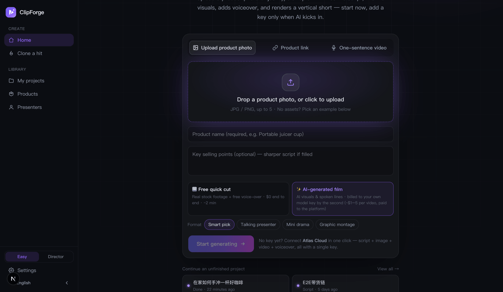
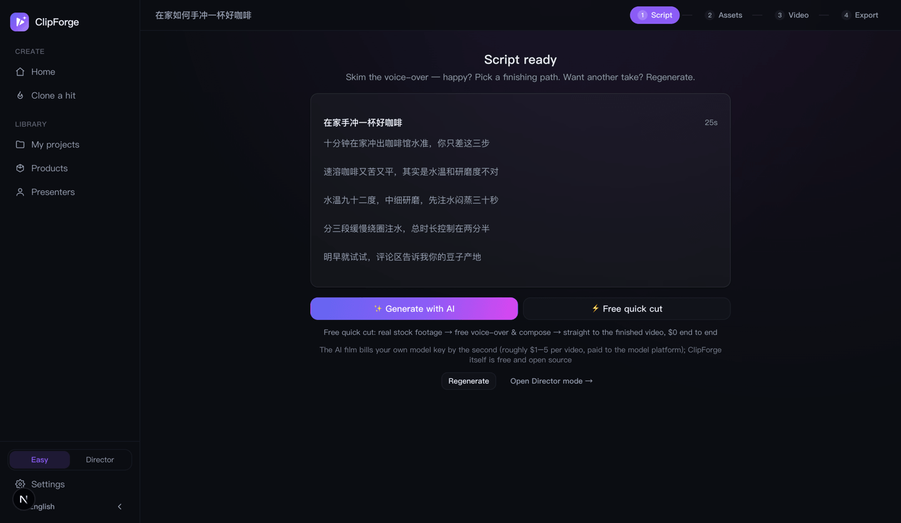
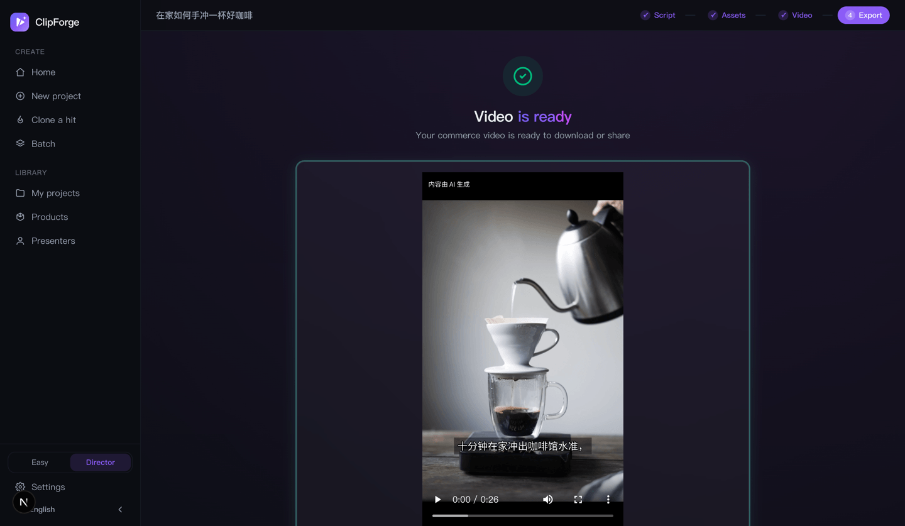

ClipForge User Guide: From Install to Your First AI Product Video
Bottom line first: 3 minutes and $0 gets you your first unwatermarked product video after install. ClipForge is an open-source (AGPL-3.0) AI short-video generator — drop a product photo or type a topic, and AI writes the script, fills the visuals, voices it and composes a vertical video. This guide covers install, the free path, AI films, commerce formats, the two workspace modes, viral cloning, batch and compliant publishing.
1. Install: pick any of three ways
Option 1: Desktop app (easiest)
Grab the Windows / macOS installer from GitHub Releases — double-click and go; all data stays on your machine.
Option 2: Docker, one line
docker run -d -p 3000:3000 -v clipforge-data:/app/data ghcr.io/xixihhhh/clipforge:latestOption 3: From source (developers)
git clone https://github.com/xixihhhh/clipforge.git
cd clipforge && npm install && npm run devFFmpeg is required for the free local compose path; the desktop build bundles it.
2. Your first video in 3 minutes: the free quick cut ($0)
- Drop the product in: upload photos (up to 5), paste a product URL (title/price/images auto-extracted), or type a one-sentence topic. No assets? Tap an example product.
- Keep the default 🆓 Free quick cut: real stock footage + free AI voice-over, $0 end to end, ~2 minutes.
- Hit Start — script → free stock visuals → voice-over & compose, all behind one progress card, landing on the export page.

The only prerequisite: one LLM key for script writing (any OpenAI-protocol platform; ~$0.0002 per call on DeepSeek. Atlas Cloud is recommended — the same key later covers AI generation too). The page prompts inline on first use.
3. One key to unlock AI generation
ClipForge is open-source BYOK: the software is free forever; AI usage is billed by your chosen model platform — no markup, no middleman. One interface aggregates 30+ models across 7 platforms:
- Atlas Cloud (recommended): one key covers script + image (GPT Image 2) + video (full Seedance 2.5/2.0 family) + voice; paste it under Settings → Platform keys;
- Volcengine Ark, fal.ai, OpenAI, DeepSeek and more are supported — pick defaults under Settings → Image model / Video model;
- Model lists refresh at runtime, and custom model IDs are supported.
4. Free quick cut vs AI-generated film
| 🆓 Free quick cut | ✨ AI-generated film | |
|---|---|---|
| Visuals | Real stock footage montage | AI-generated frames & talking presenter |
| Cost | $0 (footage/voice/compose all free) | Per second: a 12s Seedance 2.5 film measured ~$3.60; budget tiers ~$0.3–0.7 per clip |
| Time | ~2–3 min | ~4–8 min |
| Best for | Topic content, daily volume, first try | Product-on-screen, UGC talking head, quality ceiling |
| Keys needed | LLM only | LLM + image + video model |
The AI path spends money on exactly one click: the free script is your text-level plan — read it on the “Script ready” gate, click “Generate with AI”, and the storyboard grid (one image generation locks person/room/light across all shots) → one-call film (Seedance 2.5 native cuts, lines spoken verbatim) runs hands-off to the export page.

5. Commerce formats & the presenter library
- Smart pick (default): AI chooses, product close-ups first;
- Talking presenter: a natural-looking person talks to camera — UGC realism rules baked in (spoken-language lines, lived-in backgrounds, behavior beats);
- Mini drama: a story-driven skit with per-character voices;
- Graphic montage: beat-synced image-and-text cuts.
For presenter formats you can pick from your presenter library: 4-view identity sheets (front/side/back/close-up in one generation) anchor the same face across shots and across videos.
6. Easy mode & Director mode
- Easy mode (default): one creation path, script → film hands-off, no storyboard, no jargon;
- Director mode: per-shot editing, the judge panel (four blunt judges tear the lines apart and rewrite at equal length), 18 camera presets + Mix overlays, visual looks, the grid, one-call film, the advanced form (category/audience/391 recipes) and the A/B variant matrix.

7. Viral cloning & trend picks
- Clone a hit: feed a reference video — its cut points and rhythm are parsed and rebuilt around your product (mind footage licensing);
- What to post today: a live trend board on the studio page; tap a trend to turn it into a video;
- Daily persona picks + cron + CLI = a hands-free daily posting machine.
8. Batch / MCP / CLI
- Batch mode (Director): queue 10 products before a sale;
- MCP Server: wire
clipforge-mcpinto Claude / Cursor and generate a video from one pasted product link; - CLI:
npm run cli -- create --topic "..."for scripted or scheduled runs.
9. Export & compliant publishing
- 1080p unwatermarked MP4; 9:16 / 3:4 presets per platform plus a caption pack;
- AIGC provenance labels embedded by default (aligned with China's GB 45438-2025; visible "AI-generated" badge burned in);
- Pre-publish checks: throttling-risk self-check and an ad-law banned-word scan with rewrite suggestions.

10. FAQ
Can I really produce a video for $0?
Yes — free stock + free Edge TTS + local FFmpeg, unwatermarked and unlimited. Only script writing needs one LLM key (~$0.0002/call on DeepSeek).
How much is an AI film?
Billed by the second, printed on the option: the grid ≈ $0.18, a 12s Seedance 2.5 film ≈ $3.60; Mini tier ≈ $0.04/s. One confirmed click, billed to your own key.
Where is my data stored?
Entirely on your machine (SQLite + local files); Docker self-hosting works the same way.
Where do I ask questions?
GitHub Issues or Discussions — Chinese and English both welcome.
Ship your first video now
Free · open source · no watermark — a full video with zero keys.